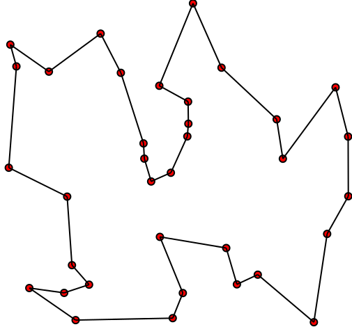

Ancienne description du projet
Dans ce problème classique d'optimization combinatoire, un voyageur cherche à visiter toutes les villes d'une région avec le trajet le plus court possible.
Nous pouvons formaliser ce problème en terme de graphe de façon suivante.
Entrée: Un graphe avec des arêtes pondérés.
Sortie: Un cycle contenant tous les sommets, de poids minimum.
Nous appellons un cycle qui visite toutes les villes un tour. Cette variante du problème ainsi que les deux suivantes sont les plus étudiés.
Pour ce projet, vous implémenterez des algorithmes (heuristiques) pour ce problème ainsi que des algorithmes pour obtenir des bornes inférieures sur la coût du tour minimum.
Vous lancerez vos programme sur les instances de TSPLIB. Le but principal du projet est d'obtenir de bonnes bornes inférieures sur ces instances.
Pour la partie programmation de ce projet, vous pouvez utiliser le langage de programmation de votre choix ainsi que des bibliothèques d'algèbre linéaire pour des opération de base (addition, multiplication de matrices ou vecteurs, re-arrangement des colonne d'une matrices, construction de matrices constantes, etc). Mais pas d'algorithme (sauf pour la multiplication de matrices), par exemple, de résolution de système linéaire.
Vous pouvez aussi utiliser des bibliothèques pour la manipulation de nombre rationels or symboliques.
Vous pouvez utiliser des parseurs existants pour charger les données dans votre programme.
Nous demander si vous voulez des suggestions d'outils à utiliser.
Puisque nous utiliserons une formulation du problème en terme de contraintes linéaires, il faut d'abord un programme pour résoudre les programmes linéaires.
(1) Implémenter l'algorithme du simplex avec l'option d'utiliser (au moins) deux choix de pivots différents.
Voir ici pour une description intuitive de l'algorithme et les notes de cours pour une description en terme de tableaux qui peut être plus adapté à son implémentation.
Tester votre implémentation des instances de problèmes de taille varié.
Ce problème est NP-difficile et donc nous commençons par des heuristiques.
(2) Implémentez un heuristic (exponentiel) exacte. Il servira de comparateur de la solution trouvée par vos autres algorithmes. L'algorithme naif en $n!$ suffit.
Si vous voulez un algorithme plus rapide, vous pouvez implémenter l'algorithme par programmation dynamique de Held-Karp.
(3) Implémentez au moins un algorithme heuristiques simple et polynomial (qui retourne un tour qui n'est pas nécéssairement optimal). Comparer avec l'algorithme exacte sur des petites instances.
Par exemple, vous pouvez utiliser un algorithme d'amélioration local qui commence avec n'importe quel tour et qui tente d'échanger deux arêtes du tour pour deux arêtes non-utilisés de tel sorte à obtenir un nouveau tour de coût moindre (et de répéter ce processus avec ce nouveau tour jusqu'à avoir aucun échange améliorant possible).
Sans même connaître la solution optimal, nous pouvons borner le facteur d'approximation de la solution heuristique que nous avons en obtenant une borne inférieure, souvant plus facile à calculer. (Ce facteur est donc borné par le ratio de la valeur de notre solution sur la borne inférieure.)
Pour obtenir une telle borne, nous utilisons un programme linéaire (dont la version entière décrit le problème du voyageur de commerce exactement).
$$\begin{eqnarray} &&\min \sum_e c_e x_e \\ &&x(\delta(v)) = 2, \text{ pour tout }v \in V(G) \\ &&x(\delta(S)) \ge 2,\text{ pour tout ensemble non-trivial }\emptyset \neq S \subset V(G)\\ &&0 \le x_e \le 1, \text{ pour tout }e \in E(G) \\ \end{eqnarray}$$La deuxième contrainte, appellée élimination de sous-tours, est une contrainte similaire à celle que nous avons ajouté au polytope d'Edmonds pour les couplages. Elle empêche des solutions qui sont des unions disjointes de tours.
(4) Essayez de résoudre (sans contrainte d'intégralité) ce PL pour des petites instances du voyageur de commerce.
On remarque qu'il y a un nombre exponentiel de contraintes d'élimination de sous-tours. Pour remédier à ce problème, nous utilisons l'idée de séparation (déjà vu pour l'algorithme de l'ellipsoide).
Il reste à décrire l'algorithme pour 3.1 et 3.2. C'est-à-dire un algorithme pour trouver une contrainte de sous-tours non satisfaite, si elle existe.
Ce problème est équivalent à determiner si la coupe minimum dans le graphe pondéré par la solution du PL a une coupe de poids de valeur inférieur à 2. Nous pouvons trouver une telle coupe si elle existe en calculant la coupe minimum dans ce graphe pondéré.
(5) Implémentez un algorithme pour calculer la coupe minimum pondérée d'un graphe pondéré.
Utiliser (1) et (5) pour implémenter l'algorithme décrit ci-dessus.
Nous rencontrerons cependant un deuxième problème: le nombre de variables dans le PL est trop élevé. Surtout si le graphe est proche du graphe complet.
Pour résoudre ce problème, nous pouvons se restreindre à un sous-ensemble $E'$ des arêtes du graphe. La solution obtenue est alors probablement non-optimale pour le graphe en entier. Nous pouvons utiliser le PL dual pour vérifier si c'est le cas.
(6) Écrire le PL dual.
En résolvant le PL dual restreint à $E'$, nous pouvons trouver les contraintes duals (pour $E(G)$) qui ne sont pas satisfaites. Nous ajoutons ensuite les arêtes correspondantes à ces contraintes à $E'$ et on répète ces étapes.
Si nous arêtons cet algorithme à une certaine itération, nous obtenons une borne inférieure sur le problème du voyageur de commerce de départ.
(7) Implémenter l'algorithme itérative de résolution du dual restreint décrit ici. Comparer la valeur des solutions primals et duals que vous obtenez sur des instances de TSPLIB.
Combinatorial Optimization, W. J. Cook, W. H. Cunningham, W. R. Pulleyblank and A. Schrijver, pp 257-267